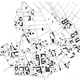

Artikel av Bengt Löf.
Genom den tillgängliga dokumentationen av Älvsborgs lösen 1571 finns en bra källa att ösa ur för att hur folket hade det i Sverige under slutet av 1500- talet och början av 1600-talet. Sverige blev ju tvunget att betala en lösen för att få tillgång till hamnen i dagens Göteborg som förlorats till Danmark 1570. 150 000 riksdaler silvermynt var hela avgiften och den togs ut av befolkningen och i praktiken av bönderna som ju helt dominerade landet då. Sverige förändrades mycket under Gustav Wasas och hans söners styre. Det gällde makten genom att sönerna fick ärva kungamakten. Tidigare hade man valt kung.
Det gällde också den katolska kyrkan som under 1500-talet helt förlorade sin starka ställning i landet och sin förmögenhet under reformationen. Kyrksilver och kyrkklockskatten drogs in till kronan liksom inte mindre än ¼ av all odlad jord i Sverige. År 1531 betalades för Hedesundas del 12 lödig mark silver (c:a 2,5 kg) i klockskatt och 1547 tog staten in kyrksilver med en silvervikt om 21½ lödig mark silver, 10½ lod och 3 kvinter (c:a 4,7 kg).
Under Vasadynastin utvecklades också administrationen av landet och det skapades ett större underlag för beskattning. Det gjordes genom uppodling av nya marker i takt med befolkningsökningen och med att för en nyodling ge sex års skattefrihet.
Vid den här tiden var barnadödligheten hög och bara hälften nådde vuxen ålder.
Samtidigt gifte sig kvinnorna i tjugoårsåldern och födde mellan fyra och sex barn. En befolkningsökning kunde alltså ske. Ett lite varmare klimat under första delen av 1500-talet ökade möjligheterna för bättre skördar och därmed en positiv befolkningsutveckling. Digerdöden, som ju var förödande på 1300-talet, återkom i mindre omfattning men drabbade inte längre lika hårt.
Sverige deltog i många krig under den här perioden. Under 1500- talet var landet i krig 32 år och dessutom var det 6 uppror som pågick under 8 års tid! Under 1600-talet pågick krig i 44 år. Älvsborgs fästning förlorades igen 1612 och nu fick Sverige återigen året efter betala ett stort skadestånd som den gången togs ut som en personskatt.
Det gick åt en hel del soldater till alla dessa krig och utskrivningarna drabbade upp till 10 % av den manliga befolkningen under 1500-talet utöver alla utländska inhyrda soldater. Det var väl lite si och så med denna utskrivning – det gick att försvinna under uttagningen, leja någon annan för sig eller kanske att muta länsman. Under 1620-talet gjordes stora tvångsutskrivningar och under 1680-talet skapades Indelningsverket som var ett fast system med ett stort antal betalda soldater. De bodde på soldattorp och 1690 fanns det i Hedesunda 45 stycken.
Befolkningen i Hedesunda tog vid den här tiden intryck av vad som hände i Uppland genom närheten dit och att socknen tidigare tillhört Tiundaland som ju också innefattade Uppsala.
På så sätt spreds nya rön/tekniker. För uppdelningen av jordbruksmarken, skiftet, använde man liksom söderut solskifte. Detta innebar att man styckar av alla gårdars mark i förhållande till tomtens storlek i byn på varje åkerstycke och i samma ordningsföljd som gårdarna finns i byn. Gårdarna låg nära varandra och kring en bygata Det kan man fortfarande se på bilden som kallas Brunn Bebyggelsestruktur 1868 och som visar gårdarnas placering i flera centrala byar detta år.
I Hedesunda tillämpade man liksom i Uppland tvåsäde som innebär att halva åkerarealen alltid låg i träda. Alternativt odlades på trädan potatis, bönor eller ärtor eller ibland rödklöver som slogs eller betades. Höproduktionen fanns utanför sädesåkrarna som backslog eller den omfattande ängsslåttern som kompletterades med lövtäkt och fräken. På sommaren var det skogsbete och fäboddrift som gällde.
Odlingen av höstsådd råg ökade även om korn (bröd och öl!) var det som odlades mest. Dessutom odlades havre, ärtor, bönor, rovor, kål, hampa, humle och lin. Men linet var ingen huvudgröda här som i Hälsingland.
Sättet att bygga gårdarna var också influerat söderifrån. Den kringbyggda gården i timmer som fanns i Dalarna och längre norrut fanns också här under denna period. Senare var gårdarna här uppdelade i två gårdstomter – en för människorna och hästarna och en för kreaturen. Det ser man också på bilden från 1868 av de centrala byarna. Dokumentationen om detta är dock begränsad från 1500 – 1600 talen eftersom kartorna då inte visar gårdarnas struktur.
Skattens bas var en blandning mellan systemen i Uppland och Norrland. Fastighetens värde var beräknat som i Uppland med 8 öres land för ett markland fram till 1647 och sedan i en gästrikevariant med 10 öres land för ett markland. Ett markland var en storlek som ansågs vara tillräckligt för en bonde och då kallades gården för helgärdshemman eller fullsäteshemman. Skatten kunde dock tas ut på ett annat sätt och då talade man om en hel skattebonde. En åkerareal som var ett öresland var från början 4624,5 m 2 eller 13122 aln 2 där utsädet i en tunna (146,5 liter) skulle räcka till för sådden.
Skatten från gårdarna utgick länge med producerat järn i små stycken om 354 grams vikt som kallas osmundar. Det var ju det järn man fick fram av myrmalmen. Den andra bilden i den här artikeln visar var man i Hedesunda hittat lämningar av tidig järntillverkning. Men järnskatten räknades ofta om till pengar och skatten var i princip 4,2 % av örestalet/taxeringsvärdet. Som vanligt än idag är taxeringsvärden och skatter ett flexibelt begrepp som varierar över tid. Det fanns upp till 11 andra skatter plus tiondet till prästen under den här tiden. Och sen kommer Älvsborgs lösen som en förmögenhetsskatt. Intet är alltså nytt under solen! År 1605 betalde 70 % av gårdarna i Hedesunda full skatt.
1571 fanns det 94 gårdar i Hedesunda socken och de flesta låg vid den bästa jordbruksmarken i de centrala delarna av socknen. Det har beräknats att varje gård i Sverige hade 5,39 innevånare i genomsnitt vilket indikerar att antalet människor var c:a 500 som bodde i socknen. Antalet tjänstefolk var lågt med endast 4 drängar och 21 pigor på 104 gårdar angivna i 1610 års mantalsängd. När det gäller djur och andra tillgångar fanns följande 1571:
| Djur/annat | Totalt | Genomsnitt per gård |
Min/Max |
| Silver Kg | 7,96 | 0,08 | 0 – 0,53 |
| Pengar,mark | 980 | 10,4 | 0 – 160 |
| Koppar Kg | 1318 | 14 | 0 – 38,3 |
| Tenn Kg | 6,91 | 0,07 | 0 – 3,4 |
| Kor | 417 | 4,4 | 0 – 12 |
| Kvigor 1 år | 48 | 0,5 | 0 – 4 |
| Kvigor 2 år | 115 | 1,2 | 0 – 5 |
| Kvigor -4 år | 98 | 1 | 0 – 8 |
| Getter | 519 | 5,5 | 0 – 20 |
| Får | 385 | 4,1 | 0 – 12 |
| Svin | 115 | 1,2 | 0 – 5 |
| Hästar | 7 | 0,1 | 0 – 2 |
| Ston | 95 | 1 | 0 – 7 |
Skatten till Älvsborgs lösen togs ut som en del av örestalet och 10 % på silvret och kontanterna, 8 öre per ko och 1 öre för varje get, får och gris. Hela skatten för Hedesunda socken var 116 riksdaler silvermynt eller 79 öre per gård i snitt. Det motsvarade i värde då i runda tal två oxar eller årslön utom mat och husrum för två pigor.
Hedesunda sockens del av den totala skatten var 0,08 %. I Sverige fanns i genomsnitt 2 kor per gård jämfört med 4,4 här. Här kan men se inverkan av den gynnsamma ängsslåttern i Hedesunda när det gällde att få tillräckligt med vinterfoder till djuren.
Självförsörjningen var nästan total och kontanter behövdes bara för salt, lyxvaror och skatten. Det mesta som behövdes tillverkades hemma. Det fanns en sockenskräddare och en sockenskomakare som vandrade runt i gårdarna. Troligen också några sockenlappar som tog hand om otrevliga göromål. Mannen skötte de tunga arbetsuppgifterna och hästen, kvinnorna hushållet och de andra djuren i första hand.
Inom byn samarbetade man med en del arbeten som t.ex. byggnation, snöplogning och tröskning och man lånade också ut sin häst när det behövdes parhästar vid plöjning. Dessutom samarbetade man om stängslen vid bygatan och runt åkrarna och delade upp dem i lotter. Vägunderhållet delades även det i liknande lotter.
Byns dokument förvarades ofta i en bykista som fanns hos en vald ålderman. I ett antal nummer av Rovbladet finns 5 bykistor i Hedesunda beskrivna. Och flera finns det nog ganska säkert. Det borde också ha funnits en lokal byordning i större byar eftersom det fanns 270 sådana bevarade från uppländska byar.
Vid tvister gick man gärna till häradsrätten för att reda ut vad som gällde och det var ofta dispyter mellan bönderna. Man kan se att domarna löste konflikter och ibland gällde de små ärenden. Häradsrätten var i de flesta fall en rättvis instans och allmogens intressen beaktades för det mesta. Begreppet äganderätt blev dock inte helt bekräftat i Sverige förrän mot slutet av 1700-talet och i sådana frågor kunde det vara problem särskilt om ett bruk eller staten var motpart.
Gårdarna fick under den här tiden också hålla häst och rum för vissa personer som reste runt i landet och till fogdens besök. Det avskaffades 1642 med undantag av Kungens följe och krigsfolk och byttes ut mot en skatt. Men en del bönder som bodde efter huvudvägar t.ex. på Ön var även senare som skjutsbönder tvungna att fortsätta med att hålla hästar för resande.
Den här artikeln har beskrivit hur en Hedesundagård kunde se ut under 1500- och 1600- talen. När det gäller mat och kläder liksom hur folk mådde och hur roligt de hade är en helt annan historia.
{kind=link}